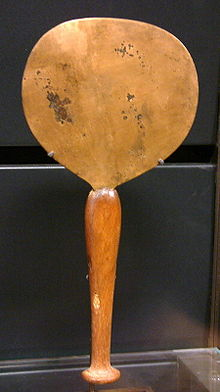
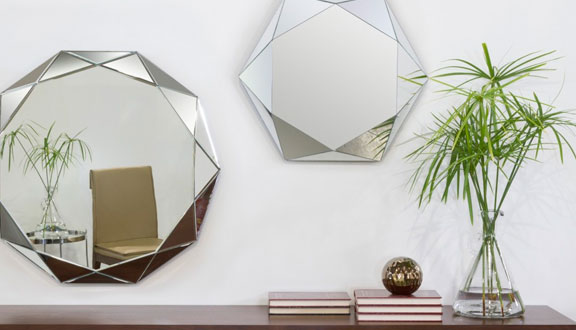

Los espejos han sido parte de la historia humana desde tiempos antiguos. Se han utilizado no solo para la reflexión, sino también en rituales y como símbolos de estatus.
| Época | Descripción | Materiales Usados |
|---|---|---|
| Antiguo Egipto | Los espejos eran hechos de metal pulido y eran símbolos de estatus. | Cobre, bronce |
| Grecia Antigua | Se utilizaban espejos de metal y cristal, a menudo en la vida cotidiana. | Bronce, cristal |
| Edad Media | Los espejos de vidrio comenzaron a aparecer, aunque eran caros y raros. | Vidrio, mercurio |
| Renacimiento | La producción de espejos se volvió más común y accesible. | Vidrio, plata |
A lo largo de la historia, los espejos han tenido un papel importante en la cultura y la mitología. Desde el mito de Narciso hasta su uso en el arte, los espejos continúan fascinando a la humanidad.
 Volver al Índice